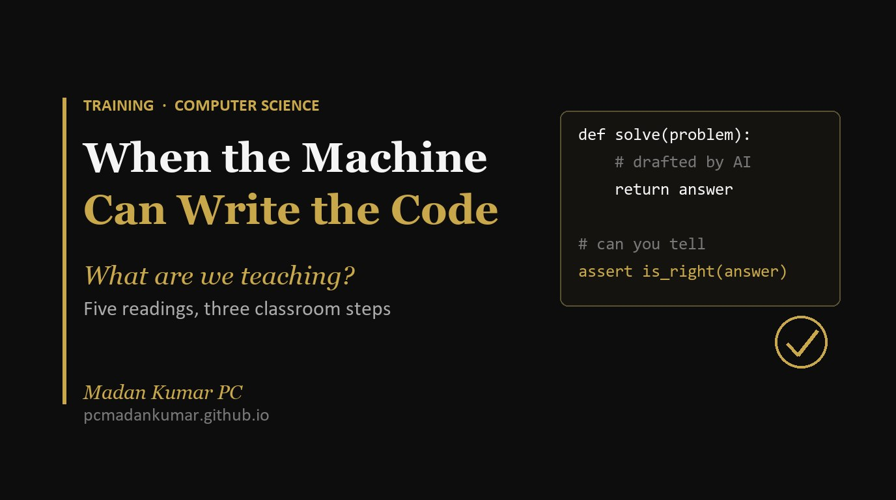

When the Machine Can Write the Code, What Are We Teaching?

Five readings on computer science education in the age of AI: an exam board, two governments, the universities and a thinker.
Why I went looking
I started my working life writing software for clients at EY and Infosys. Later I taught computer science and led the department at my school. For all those years, the hard part of the subject was obvious: you had an idea, and you had to turn it into code a machine would accept.
Students fought with syntax, missing brackets and loops that never ended. That struggle was where the learning happened.
It is no longer the hard part. A student today can describe a problem in plain English and get working code back in seconds. So I keep asking myself a simple question. If the machine can write the code, what exactly are we teaching?
A recent post on the Cambridge International blog [1] set me off. I then looked for more pieces that sit in different seats: a government rewriting its national curriculum [2], India’s own move to teach AI from Class 3 [3], a group of universities rethinking the degree [4], and a thinker asking what computer science even is [5]. Here is what I took from all five.
The exam board: more AI, and more real programming
Cambridge has updated its IGCSE and O Level Computer Science syllabuses for exams from 2029, and this is more than a routine refresh [1]. AI gets far more space: machine learning, neural networks, and questions of fairness, bias and ethics. Quantum computing appears for the first time at a gentle level, along with cloud computing and IP addressing.
What surprised me is the other direction of travel. Pseudocode is gone. Python 3 is now the only language for teaching and assessment, and a new digital route (0265) has students write, debug and run real code on screen in the exam [1].
So at the very moment AI can write code, Cambridge is asking fifteen year olds to write more of it, in a real language. I don’t read that as a contradiction. I read it as a bet that you cannot judge code you have never learned to write.
The government: computing for everyone, not just future programmers
England has just been through an independent Curriculum and Assessment Review, led by Professor Becky Francis, and the government has accepted much of it [2]. The review found the current computer science GCSE too narrow. It will be replaced by a broader computing GCSE that keeps the core computer science but adds digital literacy, data and applied technology.
The government has also committed to teaching pupils how AI works, how to use technology safely, and how to spot bias in digital systems. It is exploring a new qualification in data science and AI for sixteen to eighteen year olds. The revised curriculum is due by spring 2027, with teaching from September 2028, and teacher training through the National Centre for Computing Education will continue to be funded [2].
The policy message is clear. Computing is no longer a specialist subject for the few who want to code. It is basic literacy for every child, and AI literacy sits inside it.
India: computational thinking from Class 3
India has made its own bet, and it starts much earlier. From the 2026–27 session, CBSE has introduced a curriculum on Computational Thinking and Artificial Intelligence for Classes 3 to 8, launched by the Union Education Minister on 1 April 2026 [3]. It builds on NEP 2020, which asked for more mathematical and computational thinking right through school and for coding in the middle stage, and on the National Curriculum Framework of 2023 [3].
The design choice I like most is the order. Following the NCF, computational thinking comes first, and AI is built on top of it in later classes [3]. Classes 3 to 5 work on logical thinking, breaking problems into parts and spotting patterns, through puzzles, games and worksheets. Classes 6 to 8 move on to basic ideas of AI and its ethics. Assessment is meant to be continuous, using puzzles, group tasks and a teacher observation journal rather than rote tests [3].
The policy aim is stated openly: to make children AI ready and to help India lead in AI and machine learning [3]. Not everyone is convinced. An opinion piece in The Indian Express by an Azim Premji University professor asked whether middle schoolers can really grasp ideas like supervised learning and regression. It also named the digital divide and weak teacher preparation as real risks [3].
To me, India’s approach sits closest to the university white paper below. Both say the thinking matters more than the tool. The open question is whether we can train enough teachers to deliver it well in every school, not only in schools with good resources.
The universities: from writing code to checking it
The fourth piece is a white paper from two workshops run by the National University of Singapore and Google. Faculty came from around the world, IISc Bangalore included, along with about 60 students and recent graduates [4].
Its starting point stayed with me. For decades, the degree was built on the idea that code was scarce. Writing a program was slow, manual work, and that struggle was how students learned to think. AI has removed the scarcity. It now does much of what a junior engineer used to do: fixing simple bugs, writing tests, producing routine code [4].
The paper does not conclude that fundamentals matter less. It says the opposite. Algorithms, data structures and mathematics matter more, because a human has to check what the machine produces. The skills it puts at the centre are abstraction, verification and taking responsibility for systems, with ethics and communication treated as core rather than optional. It suggests weaving these in as small “breadcrumbs” through every year, and marking how students worked, not just what they handed in [4].
Two findings it reports should make every school leader pause:
- In one large trial, students with free access to GPT-4 did 48% better in practice but 17% worse in exams once the AI was taken away. A version that gave hints instead of answers avoided the damage.
- In the US, employment for software developers aged 22 to 25 has fallen by about 16% compared with jobs less exposed to AI [4].
The deeper question: what is computer science for?
The fifth piece steps back further. Writing on the Thinking in Public blog, the author argues that computing science has an identity problem [5]. Over two decades, the field let itself be defined as the business of building software, because that is what industry paid for. Now that AI can produce software, that narrow version looks fragile.
The line I keep coming back to: “Programming is an activity. Computing science is a scientific discipline.” [5] The field began with Turing asking what a mechanical procedure can and cannot decide. It grew up alongside logic, linguistics and the study of the mind. The author’s point is that automation makes a narrow idea of computer science obsolete, not the discipline itself.
The essay also widens what the subject must ask. Computer models are not neutral; they carry assumptions and shape decisions about credit, health care and public life. So a good education must ask what a system should do, whose view it carries and who it answers to. The worst outcome, the author warns, would be a wave of shallow AI courses that teach students to use tools without knowing how those tools fail [5].
This is an old idea returning. In the 1980s, Abelson and Sussman told MIT students that computer science is less about computers than about “procedural epistemology”: how we come to know how to do things. AI has made that view feel current again.
Where they meet
Read together, these pieces agree far more than they differ.
- Fundamentals are not going away. The exam board, the universities and the essayist all say deep understanding matters more now, because someone has to judge what AI produces.
- The skill moves from producing to judging. Writing code is still taught, but the goal is to state the problem clearly, then test, question and verify the answer.
- Ethics and impact move to the centre. Bias, fairness and accountability now sit in an IGCSE syllabus, two national curricula and a university white paper alike.
- Assessment has to change. If the final product can be generated, we need to see the thinking that led to it.
The real tension is about breadth. Both governments want computing for everyone, with digital and AI literacy for all, and India wants it from the age of eight. The essayist worries about breadth without depth. Both are right, and schools will have to hold both at once.
What this means for my work
I read all five with two hats on. I coordinate Cambridge programmes and work alongside CBSE classrooms, and I see two syllabuses that finally match the world our students live in, with a teacher training challenge to match. Many of our computer science teachers came from maths or science, and topics like neural networks and bias need more than a new textbook.
As a career counsellor, I meet parents who ask whether computer science is still worth it. My honest answer after this reading is yes, but the reason has changed. It is no longer worth it because it leads straight to a coding job. It is worth it because the people who understand how these systems work, where they fail and whom they affect will be the ones trusted to run them.
For classrooms, I would take three practical steps from this reading:
- Let students struggle with code on their own first, then bring in AI to check and extend their work.
- Ask students to explain and defend their code out loud, not just submit it.
- Treat bias and ethics as part of every unit, not one lesson at the end of the year.
The machine can write the code. Our job is to raise people who can tell whether the code is right, and whether it should exist at all.
What is your school changing in the way it teaches computing? I would love to hear from you on LinkedIn.
References
- Steele, A. (22 September 2026). Teaching computer science in an AI-powered world. Cambridge International Education blog. Syllabus details checked against Cambridge’s own pages for IGCSE Computer Science 0265 and O Level Computer Science 2210.
- National Centre for Computing Education (funded by the Department for Education, England). Computing and digital literacy in the Curriculum and Assessment Review. Teach Computing. See also Computing (November 2025), Government announces changes to computing curriculum.
- Ministry of Education, Government of India (1 April 2026). Union Education Minister launches CBSE’s new curriculum on Computational Thinking and Artificial Intelligence for Classes III–VIII. Press Information Bureau. See also CBSE Circular Acad-15/2026; National Education Policy 2020; and the critique “CBSE’s AI curriculum: lofty goals, little clarity”, The Indian Express, 10 April 2026 (summary).
- Lee, Y.-C., Boonprakong, N., Tan, Y., Soh, H., Potanin, A., Kumar, V., Sinha, A. K. and others (2026). Reshaping Undergraduate Computer Science Education in the Generative AI Era (Version 1.0). Report of the NUS and Google Workshops. arXiv:2606.07545.
- Thinking in Public (31 March 2026). Computing Science Has an Identity Problem. reflectingwide.blogspot.com.